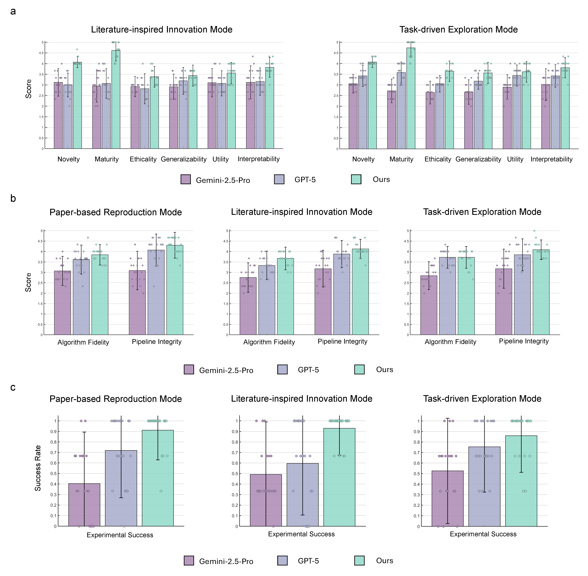
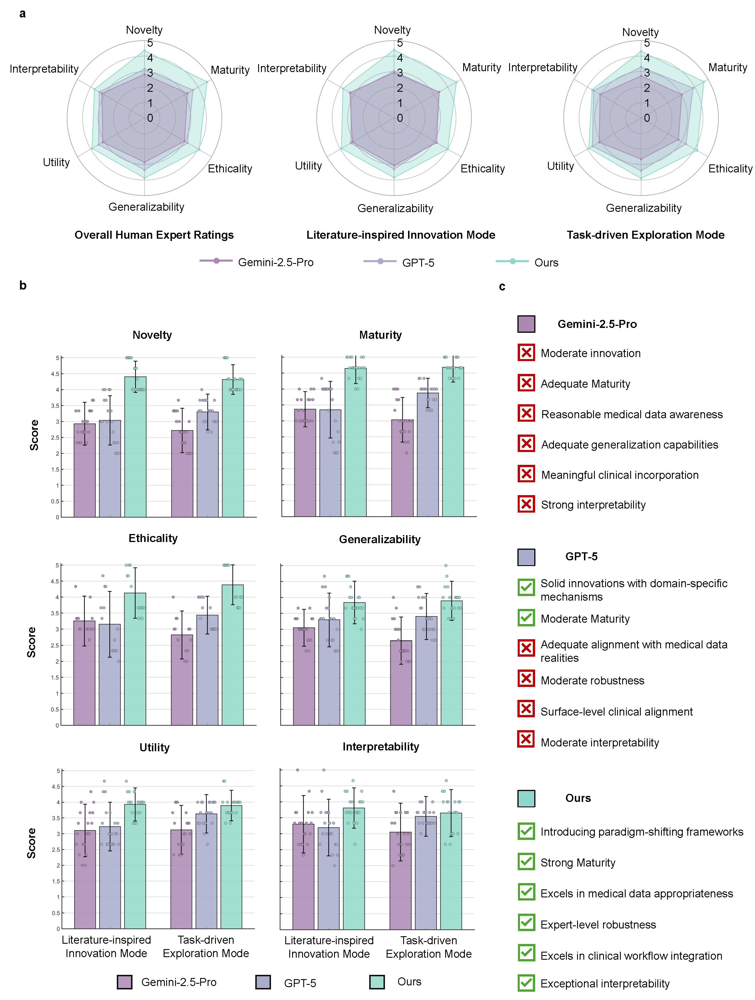
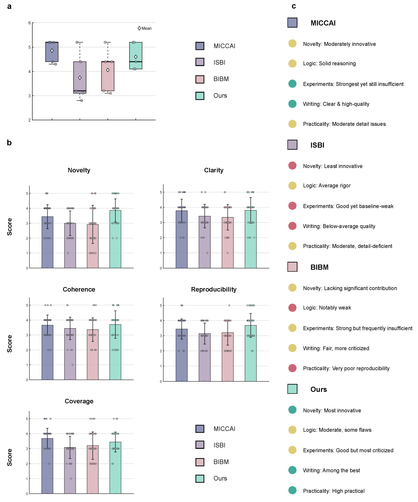

Mode 1: Reproduction
Faithful re-implementation of specified hypotheses or target papers.
Domain-aware autonomous scientific discovery for clinical AI:
from evidence-grounded ideation and medical experimentation to manuscript drafting and review.

Existing autonomous "AI Scientist" systems are largely domain-agnostic.
In medicine, that gap limits reliability, clinical relevance, and translational feasibility.
Medical AI Scientist introduces a framework explicitly designed for healthcare constraints, specialized data modalities, and evidence standards.
The framework supports increasing autonomy across three modes.
Faithful re-implementation of specified hypotheses or target papers.
Literature-inspired ideation and adaptation for clinically meaningful improvements.
Open-ended discovery under task-driven objectives and domain constraints.
Benchmark
A structured benchmark for evaluating autonomous medical AI research from hypothesis quality to experimental execution and paper-level outputs.
Each case is grounded in peer-reviewed reference papers and organized for multi-stage evaluation: idea quality, research-plan completeness, executable experimentation, and paper-level output quality.



Idea Refinement
In mode-2 ideation, Medical AI Scientist does not stop at proposing a plausible method. It cross-checks raw ideas against medical literature and engineering evidence, then refines them into designs with fewer unsupported assumptions and a clearer implementation path.
BioASQ Factoid QA
Human idea score: ours 23 vs best baseline 14
Proposed a memory-augmented QA architecture with UMLS-aware hierarchy reasoning, external memory, and reinforcement learning. The design is broad and ambitious, but it introduces several moving parts without a tight link to BioASQ factoid constraints.
Proposed a unified multi-task framework for factoid, list, and yes/no QA. It is implementable, but it stays generic and does not directly address answer calibration or surface-form mismatch in factoid extraction.
Started from a span-entailment co-training design with an in-document evidence graph and answer-type priors. The direction already targeted grounded span selection, but the mechanism for span normalization and synonym robustness was still diffuse.
Optimal-Transport Alignment Guided Segmental CRF with Neural Edit-Transduction Normalizer. The final design sharpens the original concept into three concrete pieces: OT-based question-context alignment, a globally normalized segmental CRF for span selection, and a lightweight edit-transduction normalizer for biomedical synonym and orthographic variation.
MIMIC-IV Lab Risk Forecasting
Human idea score: ours 25 vs best baseline 18
Proposed a dynamic graph-transformer over patient trajectories. The idea is expressive, but the graph construction is broad and underspecified for irregular lab forecasting.
Proposed retrieval-augmented generative lab forecasting. It is novel, but it introduces a large retrieval-and-generation stack that is harder to validate and calibrate for continuous lab values.
Started with a text-style autoregressive transformer (LabGPT) that tokenized heterogeneous EHR events and generated future lab values as text. The idea was flexible, but still leaned too heavily on generation for a calibrated numeric forecasting task.
FlowLab-SET: a time-conditioned Set Transformer encoder with conditional monotonic normalizing flows for calibrated lab forecasting. The refined version drops the free-form decoder in favor of a structured event encoder and density model that better matches the continuous, irregular, uncertainty-sensitive nature of lab prediction.
Read the full case study PDFs directly below.
@article{medical_ai_scientist_2026,
title = {Medical AI Scientist},
author = {Author List},
journal = {Preprint},
year = {2026}
}